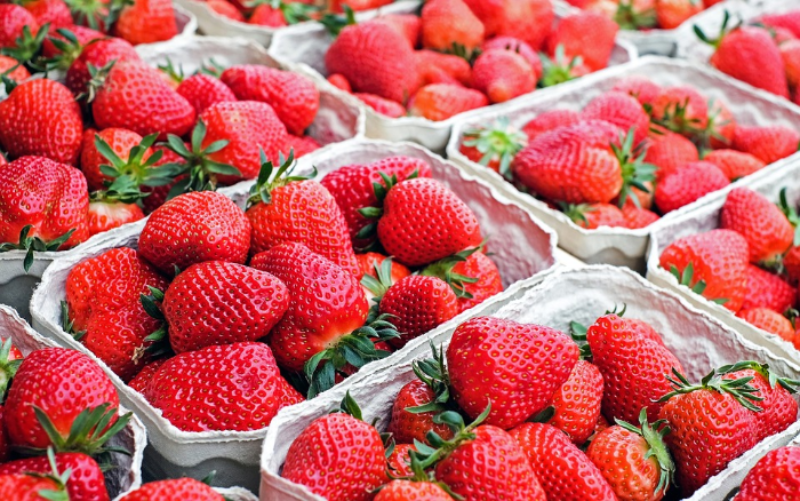
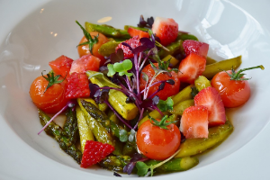

The Benefits of Fruits: Strawberry
The strawberry, Fragaria, is one of the most popular berry fruits in the world. There are more than 10 species of strawberry that differ in flavour, size and texture yet they all have the same heart-shaped, red flesh and seeded coat together with small, leafy green caps and stems that adorn their crowns.
Strawberries have a long history and have been enjoyed since the Roman times. Native to many parts of the world, hundreds of varieties of strawberries exist due to crossbreeding techniques. In 1714, a French engineer commissioned to Chile and Peru, observed that the strawberry native to those regions was much larger than those found in Europe. He decided to bring back a sample of this strawberry to cultivate in France. The end result was a large, juicy, sweet hybrid (the modern garden strawberry) that became extremely popular in Europe.
Like many other fruits, strawberries make their claim in history as a luxury item enjoyed only by royalty. It has been alleged that newly weds were entitled to strawberries with soured cream as a wedding breakfast, believing them to be an aphrodisiac.
The strawberry season in the UK is short and runs from the end of May through July. To achieve maximum yields during this short season, farmers need to protect emerging berries from the muddy soil. Traditionally, this was done by spreading a layer of straw around each new plant - hence the name strawberry.
How to select and store. Choose berries that are firm, plump, unblemished and free of mould. Look for those that have a shiny, deep red colour and bright green caps attached. Once picked, strawberries do not ripen further so avoid those that are dull, or have green or yellow patches. Wash and handle them with care. Bring to room temperature before serving.
Try to choose locally grown strawberries during the harvesting season as they will have the best flavour, though imported berries are available all year round. The scent of strawberries can be an indicator of quality. They are highly perishable and so are best eaten within a couple of days.
Strawberry Asparagus Salad Recipe

- 2 tablespoons lemon juice
- 2 tablespoons extra-virgin olive oil
- 1 1/2 tablespoons honey
- 3 tablespoons balsamic vinegar
- Salt and freshly ground black pepper
- 2 cups (1-inch pieces) fresh asparagus
- 8 cups arugula
- 2 cups sliced fresh strawberries
Benefits
It may come as a surprise to learn that strawberries are a common allergen. If you have allergies to birch pollen, you are more likely to develop a secondary food allergy to strawberries. Most common symptoms are experienced in the mouth and throat - tingling, itching, watery eyes and runny nose. Although the white strawberry variety is known to contain less of the allergen, they are best avoided if you experience a strawberry allergy. If you are concerned about food allergies or anaphylaxis consult your GP
- Excellent source of vitamins C and K.
- Provide good dose of fibre, folic acid, manganese and potassium.
- Help with digestive ailments, teeth whitening and skin irritations.
- Help regulate blood sugar levels by slowing digestion.
- Can be eaten raw, cooked or used to make tea.